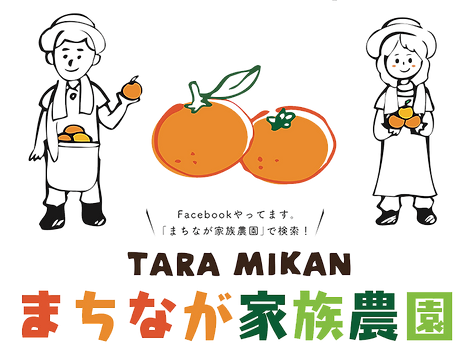

まちなが家族農園
なんかうまかよねこのみかん！
愛情たっぷりおいしいみかん
ご挨拶

私たちは佐賀県太良町で暮らしています。
佐賀県の西南端で、長崎県との県境に位置する人口八千人余りの小さな町です。
西は太良岳、東は有明海に面し、東西12km、南北25kmのなだらかな丘陵地帯となってるため、
みかんを栽培するには非常に適した地形です。
このような恵まれた町で、昭和18年頃、
この集落でいち早くみかんの木を植えたのがまちなが家族農園の始まりです。
現在は三代目園主を筆頭に、家族7人（父、母、祖母、長女、長男、次女、次男）と1匹（犬）で営んでいます。
ぼくをクリックしてみて！

おいしいみかんの秘密
園主は今62歳！されど62歳！
作るのに精一杯ですが、
3つのこだわりをもって大事にしています。
マルチ栽培
マルチシートという白くて小さい穴が多数開いているシートをみかんの木の下に敷くことで太陽光が反射して日当たりが良くなり、水分の吸収を抑えながらも蒸発させることで水はけの良い環境を作ることができます。 みかんの糖度が上がり、より甘く、きれいな濃いオレンジ色になります。
完熟したみかんを収穫
より甘くておいしいみかんにするために、みかんが完熟するのを待ってしっかり甘みがあるものから収穫します。

みかんに愛情を込める
家族で愛情たっぷり育てています。みかんには最善の注意を払って、一つ一つ丁寧に扱っています。みかんを思う気持ちは誰にも負けないと思います。
～くみさん（母）のエピソード～
園主であるよしたかさんはとても優しい人です。初めて怒られたのが、ケンカして強くみかんをコンテナに投げ入れたとき・・・ みかんにあたるな！！と吹っ飛ぶくらい怒られました。それだけ、みかんを大切に扱っています。
 太良みかん（小玉）
太良みかん（小玉） 太良みかん
太良みかん はるか
はるか はれひめ
はれひめ レモン（リスボン）
レモン（リスボン） キウイ
キウイ 100%ストレートみかんジュース
100%ストレートみかんジュース